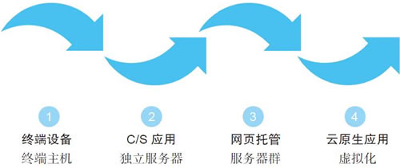
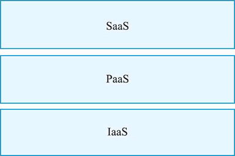
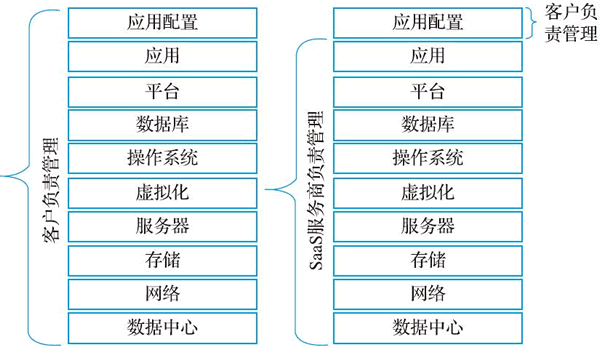

首页 > 编程笔记
SaaS（软件即服务）精讲
因为对象和语境不同，所以很难为 SaaS（Software as a Service，软件即服务）做出一个既通俗易懂又科学严谨的定义。
对于大众群体而言，我们用一个类比来解释 SaaS。以前，每家每户都需要挖一口井解决吃水问题，后来改为集中供水，即由自来水公司供水，用户只要按时缴纳水费，打开水龙头就会有水。这省却了找水和打井的过程，也节省了工程成本。自来水公司的业务模式就变成了“供水即服务”。
对于软件技术人员而言，SaaS 是一种新的应用架构模式，引入了共享单个实例、多租户、权限模式、存储模式和计费模式等概念。
对于 SaaS 服务商而言，由于采用与传统软件不同的交付模式和订阅收入模式，SaaS 意味着一种全新的商业模式和新的生意机会。
对于客户而言，SaaS 相当于把 IT 设备、软件和运维服务，全部外包给了 SaaS 服务商。
马克最初对 SaaS 的设想非常超前，虽然今天在互联网上使用应用程序很平常，但是在二十年前，很多人根本就没有用过互联网。
除了超前的概念外，SaaS 模式还非常实用，用户无须再把软件买回来，放在自己的服务器上。马克坚信：一定有一种方式，让购买软件更加方便和便宜。企业不再需要动辄数十万、上百万美元的投入，也不需要经历漫长的安装和实施周期，只要注册和付费，用户通过自行配置就可以使用软件，对软件进行维护和升级也不需要用户亲自动手。更关键的是，在移动应用还没有诞生的年代，用户就能在世界各地使用任何终端设备，像访问网站一样随时访问自己的应用。
这种将软件作为一种服务来销售，而用户只需要每月缴纳固定的费用即可使用软件的模式，在 20 世纪 90 年代就已经出现了，当时被称为按需（on-demand）服务，这就是 SaaS 的雏形。
在详细说明 SaaS 模式之前，我们有必要了解一下 SaaS 的演进过程，看它是如何从一个设想发展成为一种主流的企业服务模式的。
SaaS 在企业服务领域成为一种主流形式，也只是近些年的事情。实际上，这个演进过程相当长，主要经历了 4 个阶段，如图 1 所示。
总的来说，SaaS 以应用托管和多租户的概念为发端，随着互联网和云计算技术的普及，逐步发展成为一种新的企业服务形式。
通过抽象和分层，IT 行业创造了“一切即服务”的概念，也就是 XaaS。SaaS 周边除了 PaaS（Platform as a Service，平台即服务）和 IaaS（Infrastructure as a Service，基础设施即服务）以外，还衍生出了很多“即服务”概念，如 DaaS（数据即服务）、OaaS（运维即服务）等。
实际上，对这些 XaaS 仔细分析和分类后会发现，大多数新创的 XaaS 概念，都可以归结到 SaaS、PaaS 和 IaaS 三种核心服务之一。将 XaaS 分为三层核心服务模式的好处在于，可以清晰界定各自的功能定位。
很早以前就有了按需服务和服务订阅的概念，如 ASP 等模式。它们之所以没有成为主流服务形式，除了受技术制约外，主要原因是当时没有做出像今天这样清晰的体系结构以及分层、分工标准。毕竟一家公司除了做应用以外，同时还要做设施、做平台，应用就很难做好。
严格意义上的 PaaS 是由专业平台服务商运营的服务，它为 SaaS 提供部署环境和公共工具，比如组织结构、权限、计费、API等，即 PaaS 是一种公共服务。
所以，如果严格按照 PaaS 的定义，大多数 SaaS 服务商是不可能做、也没必要做 PaaS 的，至少在 SaaS 创业初期是这样。实际上，做 PaaS 需要的技术能力和资源，并不是 SaaS 创业公司所具备的。因为 SaaS 服务商的强项在于业务和应用，而不是平台技术和服务能力。
实际上，目前国内对 PaaS 的理解都不太准确。所谓的 PaaS 实际上是 SaaS 公司的内部应用平台，它其实是 SaaS 的一部分，为了便于从层次概念上进行区分，将其称为应用 PaaS（Application PaaS，APaaS）。
IaaS、PaaS 和 SaaS 三者的关系如图 2 所示。
ToB 的范围很大，SaaS 只是 ToB 中的一个类别，它们之间是包含关系，但有时这两个词被混用。
SaaS 只是众多企业服务方式中的一种，SaaS 领域所说的企业服务，特指以 SaaS 方式为企业提供的服务，如 SaaS CRM、SaaS 财税等。
虽然 SaaS 与企业服务经常被混用，但二者还是有差别的：SaaS 代表了一种服务的提供方式；而企业服务则代表服务的具体内容。也就是说，SaaS 服务商看到的是 SaaS，而企业客户看到的是服务。SaaS 改变的是服务方式，并不是改变服务的内容。
从行业市场看，软件与 SaaS 是竞争和替代关系，软件本身也有向 SaaS 转型的趋势。
反过来说，所有 SaaS 必须具有 PaaS 的业务可定义和可扩展的能力，这是为了补偿 SaaS 个性化能力的不足。
某些有特殊要求的行业和企业业务，要求有较大的私有化和定制化空间，这种情况就需要采用私有云部署模式。私有云 SaaS 既可以部署在企业的自有机房或数据中心，也可以部署在第三方数据中心或云服务中心。不管部署在何处，私有云 SaaS 都由单个组织独享，并完全由企业自行管理和维护。
相比公有云 SaaS，私有云 SaaS 对企业来说更加昂贵，但是相比定制软件还是便宜的，这是因为私有云 SaaS 省去了企业自行开发软件的成本。所以私有云 SaaS 是介于公有云 SaaS 和传统软件之间的一种形态。
但是对于提供私有云模式的 SaaS 服务商来说，私有云 SaaS 需要独立维护软件版本，因此升级和服务成本也会随之增加。私有云 SaaS 是一门难以规模化且增长受限的生意，私有云部署模式的 SaaS 服务商和传统软件业务一样，很难做大规模。
公有云中的“公有”二字，给人的感觉是信息和数据公有化，并由此联想到安全和私密性问题。实际上，这是对公有云的一个误解，但凡涉及公共利益的信息服务，其安全标准和对运营者的合规要求都是按照最高级别设置的。
对于已订阅的服务，用户可自主选择使用时间和所需功能，也可以自行管理系统和服务的配置。
做到这一点对 SaaS 模式来说不难，因为 SaaS 服务商同时服务大量用户，可以从大量用户反馈中提取共性的业务问题，然后通过在线统一升级加以解决。此外，SaaS 模式通过持续升级，不断打磨产品，使产品满足大部分用户的需求。而在线升级几乎不会影响用户的业务，多数情况下用户感知不到升级过程。
更为重要的是，随着持续迭代升级，SaaS 产品的业务符合度会越来越高，易用性也会越来越好。
在 SaaS 的订阅模式下，客户可以按年或者按月付费，甚至不用占用 IT 的采购预算，使用运营费用即可支付 SaaS 的订阅费用，这在很大程度上降低了客户使用软件服务的成本，也降低了企业使用信息服务的门槛。
SaaS 对软件进行全方位降维，把大系统分解成更多细分业务单元，在业务细节处理上，SaaS 也比传统软件更加细腻。作为互联网产品的 SaaS，其易用性和产品体验都优于传统软件。
如今，企业客户可以只为需要的业务工具买单，不必支付整个系统的费用，只订阅实际需要的功能即可。SaaS 业务细分和低颗粒度的特点，可以让所有企业，特别是中小企业，都能用得起软件。
用一个不太贴切的比喻：传统软件相当于手工裁缝店，从用料到缝制都由客户决定好后再加工；而 SaaS 相当于成衣工厂，所有服装都是工厂综合大量客户喜好的款式和尺寸分类后设计制作的，因而不能兼顾客户的个性化要求。
随着越来越多的用户反馈，SaaS 也在持续迭代。等到积累足够多的业务实例后，SaaS 产品也变得“见多识广”，个性化需求的数量开始下降，SaaS 变得越来越“标准”了。
当产品能满足 80% 的目标用户时，个性化问题在经营层面就可以视为不存在了，即使放弃 20% 要求定制化才能签约的客户，也不会对公司经营造成较大的影响。
SaaS“一经上线，不可更改”看似是一个很大的缺点，但在某种程度上，抑制了用户频繁变更需求，也就是软件项目中的“个性化综合征”。
SaaS 发展的成熟恰好迎合了大型企业对于 IT 变革的需求。引入 SaaS 能大大减轻企业 IT 投入的负担，无论是软件和设施的投资，还是人工成本，都能得到大幅降低。能实现同样的业务支撑效果，省钱才是硬道理。
图 3 展示了传统软件和 SaaS 部署模式中，哪些服务是服务提供商负责的，哪些服务是用户自行管理的，它们在责任范围上有很大的差异。
在传统软件部署模式下，企业需要管理从数据中心到应用配置的全部内容。毫无疑问，每一层都需要配置软件或硬件，都需要专门的维护人员，需要投入的成本无法降低。而在 SaaS 模式下，企业需要负责管理的只是应用配置，这个工作只要经过简单的培训即可上手操作，而底层的其他工作都由 SaaS 服务商负责。企业在甩掉大部分工作量的同时，也节省了大量成本。
企业信息服务用 SaaS 代替传统软件，在设施和人力维护方面都能节省一大笔开支，大型企业的节流效果尤为明显。对于大部分中小企业，它们面临的问题不是选择传统软件还是选择 SaaS，而是企业信息服务本身的使用成本。软件时代昂贵的 IT 成本，将大多数中小企业挡在信息化门外，所以中小企业才是 SaaS 的最大受益者。
对于 SaaS 来说，行业的变化趋势反映到每个客户的需求变化是基本一致的，SaaS 服务商可以根据变化的趋势，提前做出变更和升级安排。
SaaS 作为云服务的应用层，可以承载大部分企业的各类业务。与传统软件相比，SaaS 的业务颗粒度更小，可以更准确地满足细分的业务领域。
也就是说，SaaS 在降低成本的同时，满足了企业对业务快速变化的需求。
对于大众群体而言，我们用一个类比来解释 SaaS。以前，每家每户都需要挖一口井解决吃水问题，后来改为集中供水，即由自来水公司供水，用户只要按时缴纳水费，打开水龙头就会有水。这省却了找水和打井的过程，也节省了工程成本。自来水公司的业务模式就变成了“供水即服务”。
对于软件技术人员而言，SaaS 是一种新的应用架构模式，引入了共享单个实例、多租户、权限模式、存储模式和计费模式等概念。
对于 SaaS 服务商而言，由于采用与传统软件不同的交付模式和订阅收入模式，SaaS 意味着一种全新的商业模式和新的生意机会。
对于客户而言，SaaS 相当于把 IT 设备、软件和运维服务，全部外包给了 SaaS 服务商。
SaaS的演进过程
SaaS 这一概念的最早提出者已经无法考证了。业界一般认为，Salesforce 的创始人兼 CEO 马克·贝尼奥夫是 SaaS 商业模式最早的实践者。马克最初对 SaaS 的设想非常超前，虽然今天在互联网上使用应用程序很平常，但是在二十年前，很多人根本就没有用过互联网。
除了超前的概念外，SaaS 模式还非常实用，用户无须再把软件买回来，放在自己的服务器上。马克坚信：一定有一种方式，让购买软件更加方便和便宜。企业不再需要动辄数十万、上百万美元的投入，也不需要经历漫长的安装和实施周期，只要注册和付费，用户通过自行配置就可以使用软件，对软件进行维护和升级也不需要用户亲自动手。更关键的是，在移动应用还没有诞生的年代，用户就能在世界各地使用任何终端设备，像访问网站一样随时访问自己的应用。
这种将软件作为一种服务来销售，而用户只需要每月缴纳固定的费用即可使用软件的模式，在 20 世纪 90 年代就已经出现了，当时被称为按需（on-demand）服务，这就是 SaaS 的雏形。
在详细说明 SaaS 模式之前，我们有必要了解一下 SaaS 的演进过程，看它是如何从一个设想发展成为一种主流的企业服务模式的。
SaaS 在企业服务领域成为一种主流形式，也只是近些年的事情。实际上，这个演进过程相当长，主要经历了 4 个阶段，如图 1 所示。

图 1 SaaS的演进过程
图 1 SaaS的演进过程
- 终端设备：通过远程终端访问集中式的主机机房，来处理或获取业务的信息和数据。现在还能在一些影片中看到这种终端设备的身影。
- C/S应用：即客户端/服务器的访问模式。通过桌面客户端访问独立服务器，处理或获取业务信息和数据。这是早期开发者和用户在局域网中常用的一种应用架构。
- 网页托管：通过网页托管访问分布式服务器，处理或获取业务信息和数据，也就是所谓ASP（Application Service Provider，应用程序服务提供商）。这时已经出现了诸如多租户、应用共享、订阅收费等形式，有一点SaaS的雏形了。
- 云原生应用：通过云原生应用，访问由软件定义的、虚拟化的服务器，也就是今天的SaaS模式。
总的来说，SaaS 以应用托管和多租户的概念为发端，随着互联网和云计算技术的普及，逐步发展成为一种新的企业服务形式。
IaaS、PaaS和SaaS的概念
在谈到云服务时，经常会出现 IaaS、PaaS 和 SaaS 这三个概念，它们构成了云服务的三层主体。1) XaaS的概念
我们知道，SaaS 是位于应用层面上的服务。想要深入了解 SaaS，有必要了解 SaaS 的基础和周边。与 SaaS 密切相关的概念还有 PaaS 和 IaaS。通过抽象和分层，IT 行业创造了“一切即服务”的概念，也就是 XaaS。SaaS 周边除了 PaaS（Platform as a Service，平台即服务）和 IaaS（Infrastructure as a Service，基础设施即服务）以外，还衍生出了很多“即服务”概念，如 DaaS（数据即服务）、OaaS（运维即服务）等。
实际上，对这些 XaaS 仔细分析和分类后会发现，大多数新创的 XaaS 概念，都可以归结到 SaaS、PaaS 和 IaaS 三种核心服务之一。将 XaaS 分为三层核心服务模式的好处在于，可以清晰界定各自的功能定位。
很早以前就有了按需服务和服务订阅的概念，如 ASP 等模式。它们之所以没有成为主流服务形式，除了受技术制约外，主要原因是当时没有做出像今天这样清晰的体系结构以及分层、分工标准。毕竟一家公司除了做应用以外，同时还要做设施、做平台，应用就很难做好。
2) SaaS、PaaS和IaaS
IaaS 相当于由软件定义的虚拟服务器，SaaS 公司一般不会涉及 IaaS。但是 SaaS 公司要不要做 PaaS，到目前都有争论，这主要是因为业内对 PaaS 的定义还存在不同的理解。严格意义上的 PaaS 是由专业平台服务商运营的服务，它为 SaaS 提供部署环境和公共工具，比如组织结构、权限、计费、API等，即 PaaS 是一种公共服务。
所以，如果严格按照 PaaS 的定义，大多数 SaaS 服务商是不可能做、也没必要做 PaaS 的，至少在 SaaS 创业初期是这样。实际上，做 PaaS 需要的技术能力和资源，并不是 SaaS 创业公司所具备的。因为 SaaS 服务商的强项在于业务和应用，而不是平台技术和服务能力。
实际上，目前国内对 PaaS 的理解都不太准确。所谓的 PaaS 实际上是 SaaS 公司的内部应用平台，它其实是 SaaS 的一部分，为了便于从层次概念上进行区分，将其称为应用 PaaS（Application PaaS，APaaS）。
IaaS、PaaS 和 SaaS 三者的关系如图 2 所示。

图 2 IaaS、PaaS和SaaS三者的关系
图 2 IaaS、PaaS和SaaS三者的关系
与SaaS有关的几个概念
在谈到 SaaS 时，我们经常听到诸如 ToB、企业服务、软件、PaaS 等概念。这些概念很容易混淆，所以有必要在此说明一下它们的含义以及相互之间的关系。1) ToB
从服务对象的角度看，服务可以分为两大类：ToB，即面向组织；ToC，即面向个人消费者。此外还有所谓的 ToG（面向政府机构），我们一般将其算作面向组织，也就是当作 ToB 看待。ToB 的范围很大，SaaS 只是 ToB 中的一个类别，它们之间是包含关系，但有时这两个词被混用。
2) 企业服务
企业服务是一个面向组织的服务的统称。实际上，企业服务有很多种类和形式，为企业提供诸如 IT 服务外包、人力资源、法律服务、咨询服务、财税服务、企业培训等业务，甚至物流服务和企业保洁，也属于企业服务。SaaS 只是众多企业服务方式中的一种，SaaS 领域所说的企业服务，特指以 SaaS 方式为企业提供的服务，如 SaaS CRM、SaaS 财税等。
虽然 SaaS 与企业服务经常被混用，但二者还是有差别的：SaaS 代表了一种服务的提供方式；而企业服务则代表服务的具体内容。也就是说，SaaS 服务商看到的是 SaaS，而企业客户看到的是服务。SaaS 改变的是服务方式，并不是改变服务的内容。
3) 软件
虽然软件业务和 SaaS 二者都包含软件，但它们是完全不同的两种业务，有着不同的商业模式。也就是说，软件和 SaaS 是两种不同的生意，一个卖产品，一个卖服务。从行业市场看，软件与 SaaS 是竞争和替代关系，软件本身也有向 SaaS 转型的趋势。
4) PaaS
按照 PaaS 业务模式的定义，大多数 SaaS 公司自己开发的 PaaS 都不是真正意义上的 PaaS，这些 PaaS 其实都是 SaaS。反过来说，所有 SaaS 必须具有 PaaS 的业务可定义和可扩展的能力，这是为了补偿 SaaS 个性化能力的不足。
公有云和私有云SaaS
云的部署方式有很多种，如公有云、私有云、混合云等，部署在云上的 SaaS 主要分为公有云 SaaS 和私有云 SaaS，行业主流的 SaaS 部署模式是公有云 SaaS。某些有特殊要求的行业和企业业务，要求有较大的私有化和定制化空间，这种情况就需要采用私有云部署模式。私有云 SaaS 既可以部署在企业的自有机房或数据中心，也可以部署在第三方数据中心或云服务中心。不管部署在何处，私有云 SaaS 都由单个组织独享，并完全由企业自行管理和维护。
相比公有云 SaaS，私有云 SaaS 对企业来说更加昂贵，但是相比定制软件还是便宜的，这是因为私有云 SaaS 省去了企业自行开发软件的成本。所以私有云 SaaS 是介于公有云 SaaS 和传统软件之间的一种形态。
但是对于提供私有云模式的 SaaS 服务商来说，私有云 SaaS 需要独立维护软件版本，因此升级和服务成本也会随之增加。私有云 SaaS 是一门难以规模化且增长受限的生意，私有云部署模式的 SaaS 服务商和传统软件业务一样，很难做大规模。
公有云中的“公有”二字，给人的感觉是信息和数据公有化，并由此联想到安全和私密性问题。实际上，这是对公有云的一个误解，但凡涉及公共利益的信息服务，其安全标准和对运营者的合规要求都是按照最高级别设置的。
SaaS的优势与短板
从总体上看，SaaS 虽然在很多方面都具有无可比拟的优势，但在现阶段国内企业服务的环境下，SaaS 也存在一些明显的短板。SaaS的优势
与传统软件相比，SaaS 在很多方面具有明显优势，主要优势可以总结为以下几个方面。1) 按需获取和自助服务
SaaS 无须用户自行准备服务器、网络设备等硬件设施，而是直接通过互联网，以订阅的方式获得服务。用户在选择和更换 SaaS 服务商方面有了更大的自主权，不必像使用传统软件那样，必须绑定某一家软件公司。对于已订阅的服务，用户可自主选择使用时间和所需功能，也可以自行管理系统和服务的配置。
2) 业务扩展性与升级
在使用传统软件的情况下，如果客户业务发展超出了软件的服务了范围，就需要额外购买模块或付费升级现有系统。使用 SaaS 就不存在这个问题了，SaaS 服务商经常是在客户提出扩展和升级要求之前，就已经完成了这些工作。做到这一点对 SaaS 模式来说不难，因为 SaaS 服务商同时服务大量用户，可以从大量用户反馈中提取共性的业务问题，然后通过在线统一升级加以解决。此外，SaaS 模式通过持续升级，不断打磨产品，使产品满足大部分用户的需求。而在线升级几乎不会影响用户的业务，多数情况下用户感知不到升级过程。
更为重要的是，随着持续迭代升级，SaaS 产品的业务符合度会越来越高，易用性也会越来越好。
3) 订阅收入模式
传统软件的收费模式通常需要企业客户一次付清所有费用，此后按年缴纳服务费。在不确定软件能否带来预期回报之前就支付全部费用，这个风险全由客户承担，给客户造成很大的投资压力。在 SaaS 的订阅模式下，客户可以按年或者按月付费，甚至不用占用 IT 的采购预算，使用运营费用即可支付 SaaS 的订阅费用，这在很大程度上降低了客户使用软件服务的成本，也降低了企业使用信息服务的门槛。
4) 让软件更便宜、更易用
无论是自行开发软件还是外包，都是一项昂贵的开支，一般只有大型企业才负担得起，中小企业很难承担高昂的软件成本。SaaS 对软件进行全方位降维，把大系统分解成更多细分业务单元，在业务细节处理上，SaaS 也比传统软件更加细腻。作为互联网产品的 SaaS，其易用性和产品体验都优于传统软件。
如今，企业客户可以只为需要的业务工具买单，不必支付整个系统的费用，只订阅实际需要的功能即可。SaaS 业务细分和低颗粒度的特点，可以让所有企业，特别是中小企业，都能用得起软件。
SaaS的短板
凡事都有两面性，SaaS 虽然在很多方面具有独特的优势，但也有较明显的不足，比如基于公有云的 SaaS 几乎不能进行定制化开发。公有云的应用服务是所有用户共享的，不能像软件或私有化部署的 SaaS 那样进行定制化或二次开发，这样有些特殊的行业或业务需求就会无法满足。用一个不太贴切的比喻：传统软件相当于手工裁缝店，从用料到缝制都由客户决定好后再加工；而 SaaS 相当于成衣工厂，所有服装都是工厂综合大量客户喜好的款式和尺寸分类后设计制作的，因而不能兼顾客户的个性化要求。
SaaS的短板能补齐吗
公有云 SaaS 不能定制化开发，这是不是一个致命的软肋呢？可以说是，也可以说不是，这取决于目标客户群和获客策略。如果用软件思维去做 SaaS，则 SaaS 全是短板；如果按照 SaaS 的思路去做，则短板就会被补齐。1) 选准切入点市场
在做 SaaS 产品之前，必须确定切入点市场，这是聚焦业务范围的重要条件。因为用户分类越精准，业务越聚焦，这个客户群体的个性化需求就越少。业务越细分，需求越标准，个性化的空间就越小。反之，业务颗粒度越大，业务越发散，没有覆盖到的个性化需求就越多。所以，选准切入点市场是降低个性化可能性的有效策略。2) 足够多的业务实例
在 SaaS 创业初期，用户不多，业务覆盖面比较窄，业务实例也很少，所以个性化的问题并不突出。但随着用户增多，涉及的业务面开始变宽，可能会出现个性化需求。随着越来越多的用户反馈，SaaS 也在持续迭代。等到积累足够多的业务实例后，SaaS 产品也变得“见多识广”，个性化需求的数量开始下降，SaaS 变得越来越“标准”了。
当产品能满足 80% 的目标用户时，个性化问题在经营层面就可以视为不存在了，即使放弃 20% 要求定制化才能签约的客户，也不会对公司经营造成较大的影响。
3) 抑制“个性化综合征”
在大多数情况下，软件交付后仍然可以变更，很多用户在没有考虑周全的情况下就要求增加或修改功能。这些需求变更未必是必须要做的，甚至可能是用户为了达到某种心理满足而产生的行为，即“因为可改，所以一直改”。SaaS“一经上线，不可更改”看似是一个很大的缺点，但在某种程度上，抑制了用户频繁变更需求，也就是软件项目中的“个性化综合征”。
4) 可扩展的应用平台
虽然 SaaS 服务商没有必要开发 PaaS，但 SaaS 非常有必要建立在一个可扩展的平台上。因为很多个性化需求的实现并不需要改动代码，应用平台的业务对象定义、流程配置和业务字段的扩展能力就可以应对大部分个性化要求。企业为什么越来越倾向于使用SaaS
以往企业的信息化领域是软件的天下，但 SaaS 正在快速占领企业软件市场。特别是在企业服务领域，越来越多的企业选择 SaaS 模式的服务。主要有三个原因：来自企业 IT 成本的压力、满足快速变化的业务要求以及顺应互联网和云计算的发展趋势。1) 企业的IT成本越来越高
全球经济发展放缓和企业经营压力增加，迫使一些大型企业开始重新评估在 IT 方面的投资。除了软件、硬件和各种设施的投资外，还包括IT部门的人力开支，企业开始怀疑这些投入能否带来预期的回报。SaaS 发展的成熟恰好迎合了大型企业对于 IT 变革的需求。引入 SaaS 能大大减轻企业 IT 投入的负担，无论是软件和设施的投资，还是人工成本，都能得到大幅降低。能实现同样的业务支撑效果，省钱才是硬道理。

图 3 传统软件和 SaaS 部署模式的对比
图 3 传统软件和 SaaS 部署模式的对比
图 3 展示了传统软件和 SaaS 部署模式中，哪些服务是服务提供商负责的，哪些服务是用户自行管理的，它们在责任范围上有很大的差异。
在传统软件部署模式下，企业需要管理从数据中心到应用配置的全部内容。毫无疑问，每一层都需要配置软件或硬件，都需要专门的维护人员，需要投入的成本无法降低。而在 SaaS 模式下，企业需要负责管理的只是应用配置，这个工作只要经过简单的培训即可上手操作，而底层的其他工作都由 SaaS 服务商负责。企业在甩掉大部分工作量的同时，也节省了大量成本。
企业信息服务用 SaaS 代替传统软件，在设施和人力维护方面都能节省一大笔开支，大型企业的节流效果尤为明显。对于大部分中小企业，它们面临的问题不是选择传统软件还是选择 SaaS，而是企业信息服务本身的使用成本。软件时代昂贵的 IT 成本，将大多数中小企业挡在信息化门外，所以中小企业才是 SaaS 的最大受益者。
2) 快速变化的业务需求
为了适应快速变化的市场需求，企业的业务方式和业务流程也在快速变化。对于软件来说，变更和修改不但周期长，而且过程复杂，因而很难满足企业对业务变化的需求。每家企业的软件版本都不一样，维护起来工作量巨大，即便是大型软件公司，也很难同时服务更多的客户，维护质量会受到影响。对于 SaaS 来说，行业的变化趋势反映到每个客户的需求变化是基本一致的，SaaS 服务商可以根据变化的趋势，提前做出变更和升级安排。
3) 顺应云发展趋势
随着云计算技术的迅猛发展，企业业务向云端迁移是大势所趋。云服务将以集约的方式向企业提供随需而变的信息和数据服务。SaaS 作为云服务的应用层，可以承载大部分企业的各类业务。与传统软件相比，SaaS 的业务颗粒度更小，可以更准确地满足细分的业务领域。
也就是说，SaaS 在降低成本的同时，满足了企业对业务快速变化的需求。
关注公众号「站长严长生」，在手机上阅读所有教程，随时随地都能学习。内含一款搜索神器，免费下载全网书籍和视频。

微信扫码关注公众号